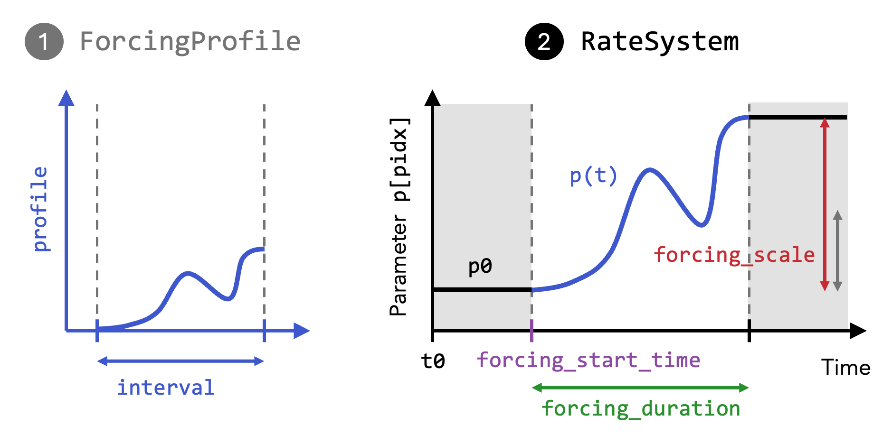
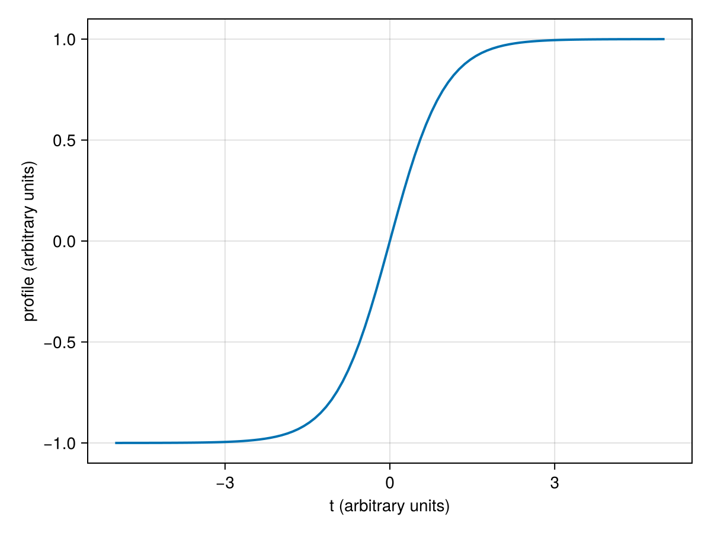
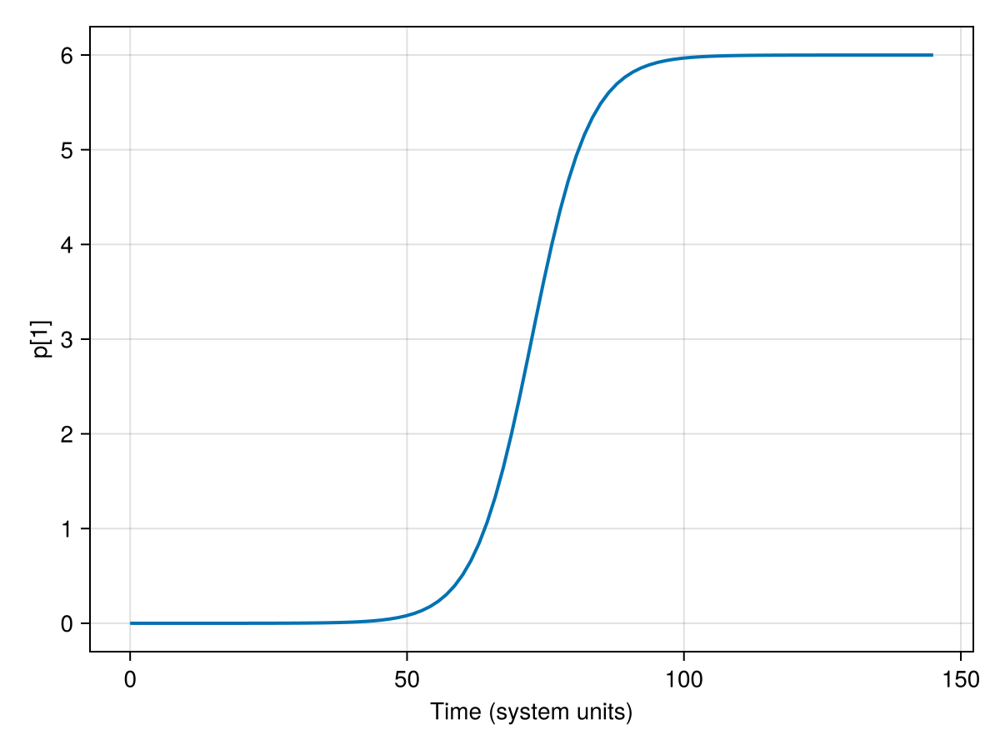
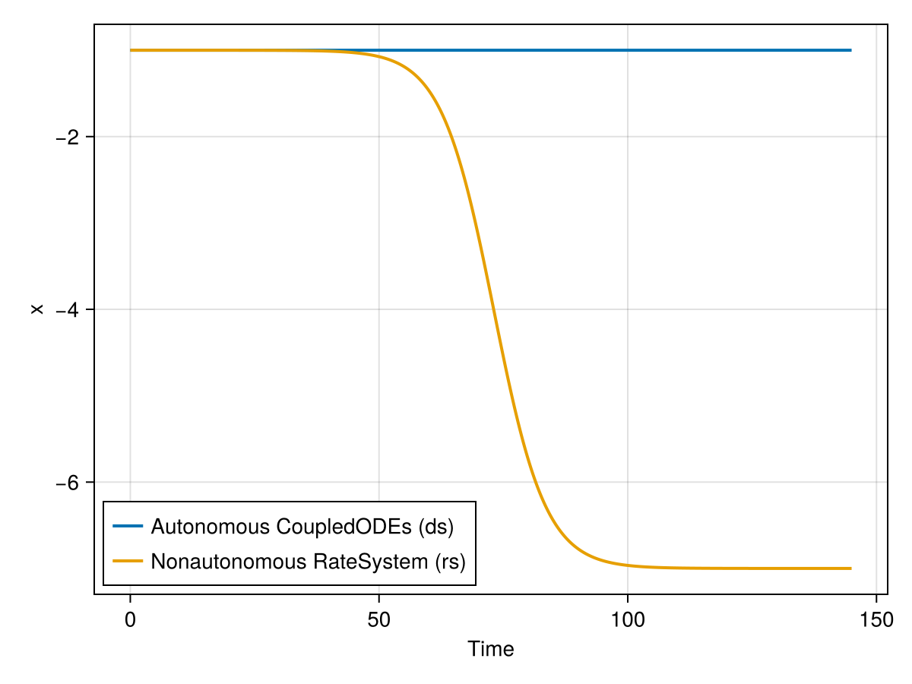

Example: Defining a RateSystem
Basic concept
Consider an autonomous deterministic dynamical system ds (e.g. a CoupledODEs) of which you want to ramp one parameter, i.e. change the parameter's value over time.
Using the RateSystem type, you can easily achieve this in two steps:
- Specify a
ForcingProfilethat describes the shape of the parameter rampingp(t)over an interval $t\in I$ - Apply this parametric forcing to the system
dsby constructing aRateSystem, i.e. a nonautonomous system in which the parameters are explicitly time-dependent.

You can rescale the forcing profile in system time units by specifying the start time and duration of the forcing change. Then, for
t < forcing_start_time- the system is autonomous, with parameters given by the underlying autonomous system
forcing_start_time < t < forcing_start_time + forcing_duration- the system is non-autonomous with the parameter change given by the
ForcingProfile, scaled in magnitude byforcing_scale
- the system is non-autonomous with the parameter change given by the
t > forcing_start_time + forcing_duration- the system is again autonomous, with parameters fixed at their values attained at the end of the forcing interval (i.e.
t = forcing_start_time + forcing_duration).
- the system is again autonomous, with parameters fixed at their values attained at the end of the forcing interval (i.e.
This setting is widely used and convenient for studying rate-dependent tipping.
Example
As a simple prototypical example, let's consider the following one-dimensional autonomous system with one stable fixed point, given by the ordinary differential equation:
\[\begin{aligned} \dot{x} &= (x+p)^2 - 1 \end{aligned}\]
The parameter $p$ shifts the location of the equilibria $\dot x = 0$. We implement this system as follows:
using CriticalTransitions
function f(u, p, t)
x = u[1]
dx = (x + p[1])^2 - 1
return SVector{1}(dx)
end
x0 = [-1.0] # Initial state
p0 = [0.0] # Initial parameter value
ds = CoupledODEs(f, x0, p0) # Autonomous system1-dimensional CoupledODEs
deterministic: true
discrete time: false
in-place: false
dynamic rule: f
ODE solver: Tsit5
ODE kwargs: (abstol = 1.0e-6, reltol = 1.0e-6)
parameters: [0.0]
time: 0.0
state: [-1.0]
Now, we want to explore a non-autonomous version of this system by applying a parameter change over a given time interval.
Forcing profile
First, create a ForcingProfile to specify the functional form of the parameter change p(t), here a hyperbolic tangent:
profile(t) = tanh(t)
interval = (-5.0, 5.0)
fp = ForcingProfile(profile, interval)ForcingProfile{typeof(Main.profile), Float64}(Main.profile, (-5.0, 5.0))Let's plot the forcing profile:
using CairoMakie
time_range = range(fp.interval[1], fp.interval[2]; length=100);
fig = Figure();
ax = Axis(fig[1, 1]; xlabel="t (arbitrary units)", ylabel="profile (arbitrary units)");
lines!(ax, time_range, fp.profile.(time_range); linewidth=2);
fig
Note that the interval is given in arbitrary units - the profile is rescaled to your system's units in the next step.
Applying the forcing
Now, specify how the forcing profile fp should be applied to the pidx-th parameter of your system ds by constructing a RateSystem.
pidx = 1 # parameter index
forcing_start_time = 20.0 # system time units
forcing_duration = 105.0 # system time units
forcing_scale = 3.0
t0 = 0.0 # system initial time
rs = RateSystem(ds, fp, pidx;
forcing_start_time, forcing_duration, forcing_scale, t0)1-dimensional RateSystem
deterministic: true
discrete time: false
in-place: false
dynamic rule: RateSystemSpecs
parameters: [0.0]
time: 0.0
state: [-1.0]
The forcing_scale is a multiplication factor that scales the profile fp.profile. Here, we have $p(5)-p(-5) \approx 2$, so the amplitude of the parameter change is $6$ after multiplying with forcing_scale = 3.
In the RateSystem, the time dependence of the parameter p[pidx] thus looks like this:
T = forcing_duration + 40.0 # Total time
t_points = range(t0, t0+T, length=100)
parameter(t) = parameters(rs, t)[pidx] # Returns the parameter value at time t
fig = Figure();
ax = Axis(fig[1, 1]; xlabel="Time (system units)", ylabel="p[1]");
lines!(ax, t_points, parameter.(t_points); linewidth=2);
fig
In a RateSystem, the forcing can easily be modified to implement different forcing rates and forcing amplitudes.
- Via
set_forcing_duration!(rs, length), you can change the length of the forcing interval and thus the rate of change of the forcing. - Via
set_forcing_scale!(rs, factor), you can change the magnitude of the forcing by a given factor.
Simulating trajectories
The RateSystem type behaves just like the type of underlyinh autonomous system, in this case a CoupledODEs. Thus, we can simply call the trajectory function to simulate either the autonomous system ds or the nonautonomous system rs.
traj_ds = trajectory(ds, T, x0)
traj_rs = trajectory(rs, T, x0)(1-dimensional StateSpaceSet{Float64} with 1451 points, 0.0:0.1:145.0)Let's compare the two trajectories:
fig = Figure();
axs = Axis(fig[1, 1]; xlabel="Time", ylabel="x");
lines!(
axs,
t0 .+ traj_ds[2],
traj_ds[1][:, 1];
linewidth=2,
label="Autonomous CoupledODEs (ds)",
);
lines!(
axs,
traj_rs[2],
traj_rs[1][:, 1];
linewidth=2,
label="Nonautonomous RateSystem (rs)",
);
axislegend(axs; position=:lb);
fig
While the autonomous system ds remains at the fixed point $x^*=-1$, the nonautonomous system tracks the moving equilibrium until reaching the stable fixed point $x^*=-7$ of the future limit system (i.e. the autonomous limit system after the parameter change) where $p=6$.